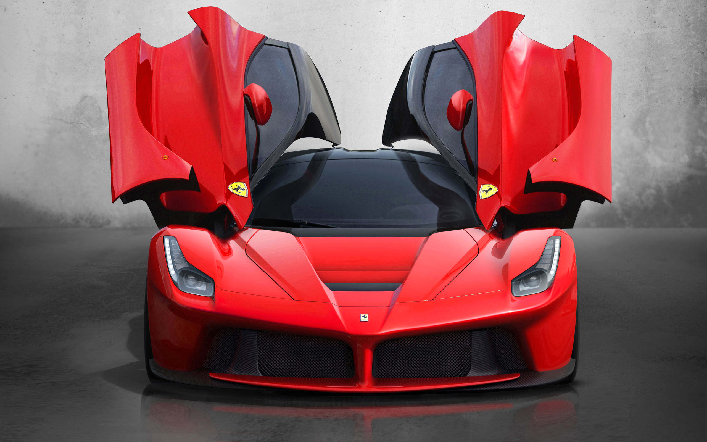

Ferrari

Ferrari is an Italian luxury sports car manufacturer based in Maranello. Founded by Enzo Ferrari in 1929, as Scuderia Ferrari, the company sponsored drivers and manufactured race cars before moving into production of street-legal vehicles in 1947. Fiat acquired 50% of Ferrari in 1969 and expanded its stake to 90% in 1988. Ferrari is the world's most powerful brand according to Brand Finance. In May 2012 the 1962 Ferrari 250 GTO became the most expensive car in history, selling in a private transaction for $38,115,000 to American communications magnate Craig McCaw. In 2014 Fiat announced its intentions to sell a portion of its share in Ferrari; as of the announcement Fiat owned 90% of Ferrari. In July 2015, it was announced that 10% of the company would be offered up for public sale in an IPO, with 80% of the company being distributed to shareholders of Fiat Chrysler Automobiles, and the remaining 10% continuing to be owned by Piero Ferrari.
Throughout its history, the company has been noted for its continued participation in racing, especially in Formula One, where it is the most successful racing team, holding the most constructors championships (16) and having produced the highest number of winning drivers. Ferrari road cars are generally seen as a symbol of speed, luxury and wealth.